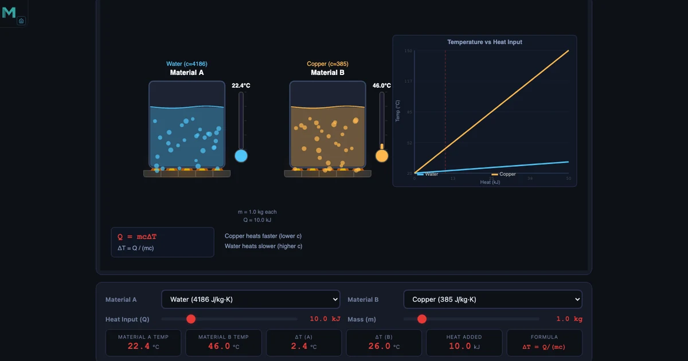
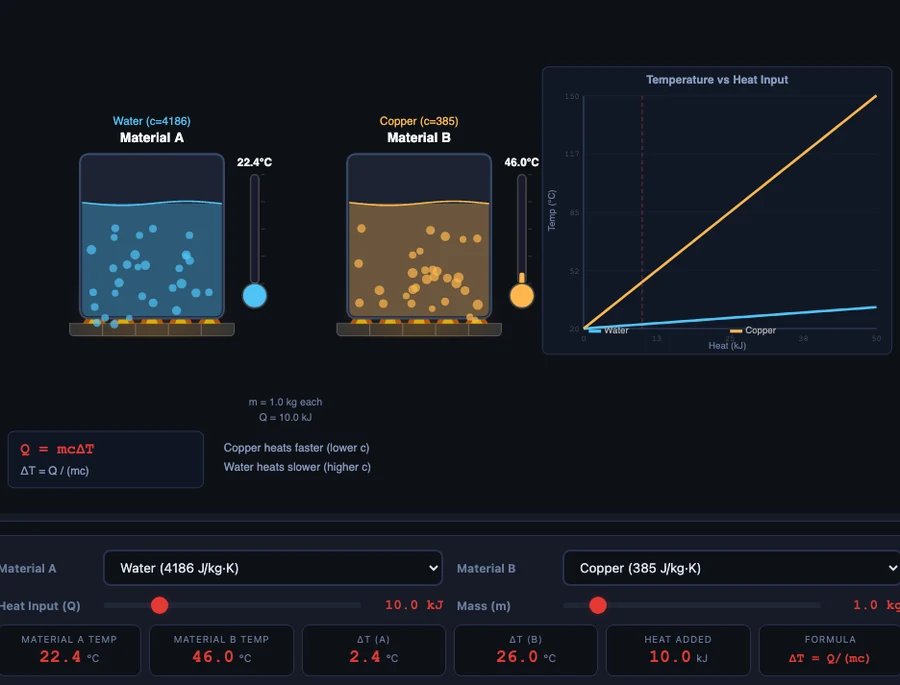

Specific Heat Capacity Calculator — Q = mcΔT, Material Comparison, and Calorimetry

- Specific heat capacity (c) is the heat energy needed to raise 1 kg of a substance by 1 K, with units of J/(kg·K); the governing formula is Q = mcΔT.
- Water's c = 4186 J/(kg·K) is the highest of any common liquid (due to hydrogen bonding), while copper's c = 385 J/(kg·K) is the lowest — so copper heats about 10.9× faster than water for the same heat input and mass.
- Rearrange the formula to find any unknown: ΔT = Q/(mc) for temperature rise, or c = Q/(mΔT) for an unknown specific heat from calorimetry data.
The Question That Trips Up Every First-Year Student
Here's a scenario you've probably lived: you pour a coffee and set a ceramic soup bowl on the counter beside it. Twenty minutes later, your coffee is lukewarm but your soup is still steaming. It's not the bowl that's keeping the soup hot — it's the water. The soup, mostly water, holds onto thermal energy in a way that the ceramic mug and the coffee both understand at a molecular level, even if you don't yet.
That difference has a name: specific heat capacity. It's one of those concepts that sounds dry in a textbook and then suddenly becomes obvious everywhere you look — in why cast-iron cookware takes so long to heat up, why coastal cities have milder winters, and why every car engine ever built circulates water through it. This guide explains the formula, compares six real materials using numbers directly from the Specific Heat Capacity Simulator, walks through calorimetry, and connects the concept to latent heat and real-world thermal engineering.
What Specific Heat Capacity Actually Means — the Formula
Specific heat capacity, written \(c\), is defined as the amount of heat energy required to raise the temperature of 1 kg of a substance by 1 kelvin (or 1°C). Its unit is J/(kg·K). The governing formula is:
\[Q = mc\Delta T\]
where \(Q\) is the heat energy in joules, \(m\) is the mass in kilograms, \(c\) is the specific heat capacity in J/(kg·K), and \(\Delta T\) is the temperature change in °C or K (the size of the degree is the same for both scales, so the choice doesn't matter here).
Rearranged to solve for temperature rise:
\[\Delta T = \dfrac{Q}{mc}\]
And rearranged to find an unknown specific heat from experimental data:
\[c = \dfrac{Q}{m\Delta T}\]
Two quick worked examples from the simulator's concept cards:
- 2 kg of water heated from 20°C to 70°C: \(Q = 2 \times 4186 \times 50 = \mathbf{418{,}600\,\text{J}}\) (418.6 kJ)
- 3 kg of water heated from 15°C to 100°C: \(Q = 3 \times 4186 \times 85 = \mathbf{1{,}067{,}430\,\text{J}}\) ≈ 1067.4 kJ
Notice that heating 3 kg through 85°C costs more than twice as much energy as heating 2 kg through 50°C — mass and temperature rise both multiply into the result. That's the equation telling you something physically real.
Six Materials Compared — Why Copper Heats 10.9× Faster Than Water
The simulator includes six materials with their specific heat values. From highest to lowest:
- Water: \(c = 4186\,\text{J/(kg·K)}\) — highest of all common liquids
- Oil: \(c = 2000\,\text{J/(kg·K)}\) — lower than water; oils heat faster in cooking
- Aluminium: \(c = 897\,\text{J/(kg·K)}\)
- Glass: \(c = 840\,\text{J/(kg·K)}\)
- Iron: \(c = 449\,\text{J/(kg·K)}\)
- Copper: \(c = 385\,\text{J/(kg·K)}\) — lowest; heats fastest
Apply 10 kJ to 1 kg of each — all with exactly the same heat input and mass — and the temperature rises are strikingly different:
- Copper: \(\Delta T = 10000/(1 \times 385) = \mathbf{26.0°C}\)
- Aluminium: \(\Delta T = 10000/(1 \times 897) = \mathbf{11.1°C}\)
- Water: \(\Delta T = 10000/(1 \times 4186) = \mathbf{2.4°C}\)
Copper heats 10.8× more than water for the same energy input. In the simulator, set material A to Water and material B to Copper, slide the heat input to 20 kJ and the mass to 1 kg — you'll see ΔTwater = 4.8°C and ΔTcopper = 52.0°C appear side by side in real time. That visual contrast is the entire concept, made immediate.
Oil vs water is also instructive: apply 20 kJ to 1 kg of each, and oil rises by 10.0°C while water rises only 4.8°C. Oil heats 2.1× faster. This explains why cooking oils reach frying temperature so quickly compared to the water-based food you drop into them — and why a splash of water into hot oil is dangerous.
The Role of Hydrogen Bonding — Why Water's c = 4186
Water's specific heat of 4186 J/(kg·K) is the highest of any common substance at room temperature. It's so high that it becomes a standard: in the old calorie system, 1 calorie was defined as the energy needed to raise 1 gram of water by 1°C, which means \(c_{\text{water}} = 4186\,\text{J/(kg·K)} = 1.0\,\text{cal/(g·°C)}\). Exact, by definition.
The reason is hydrogen bonding. Water molecules are polar — the oxygen atom pulls electron density away from the hydrogen atoms, leaving the hydrogens slightly positive and the oxygen slightly negative. Adjacent water molecules are attracted to one another through these partial charges. When you add heat energy to water, a significant portion of it goes into disrupting and rearranging these hydrogen bonds rather than directly increasing the kinetic energy (and therefore temperature) of the molecules. You're essentially paying an energy "tax" before the thermometer moves.
Metals have none of this. Copper atoms in a lattice vibrate when heated, and almost all the input energy goes straight into increasing those vibrations — which is what temperature measures. No molecular bonding network to fight. Hence \(c_{\text{copper}} = 385\,\text{J/(kg·K)}\), roughly one-eleventh of water's value.
This has enormous practical consequences. Coastal cities experience milder temperature swings than inland cities at the same latitude because oceans absorb and release heat slowly — a thermal buffer operating on a planetary scale. The same property makes water the standard coolant in car engines, nuclear reactors, and industrial heat exchangers: it absorbs a lot of heat for every degree it warms.

Calorimetry — Using Qlost = Qgained to Find Unknown Materials
Calorimetry is the experimental technique of measuring heat exchange. The fundamental principle is conservation of energy: in an insulated system, heat lost by a hot object equals heat gained by a cold one.
\[Q_{\text{lost}} = Q_{\text{gained}}\]
This lets you identify unknown materials. Place a hot metal sample into water, measure the equilibrium temperature, and solve for the metal's specific heat using:
\[m_{\text{metal}} \times c_{\text{metal}} \times (T_{\text{initial,metal}} - T_{\text{eq}}) = m_{\text{water}} \times c_{\text{water}} \times (T_{\text{eq}} - T_{\text{initial,water}})\]
Example 1 — equilibrium temperature: Drop 0.5 kg of iron (c = 449 J/(kg·K)) at 200°C into 2 kg of water at 20°C. Solving for Teq:
- Heat lost by iron: \(0.5 \times 449 \times (200 - T_{\text{eq}})\)
- Heat gained by water: \(2 \times 4186 \times (T_{\text{eq}} - 20)\)
- Setting equal and solving: \(T_{\text{eq}} \approx \mathbf{25.2°C}\)
The large mass of water barely warms — from 20°C to 25.2°C — despite absorbing a considerable amount of heat from the iron. This is water's high specific heat at work again.
Example 2 — identifying an unknown metal: You place 0.2 kg of an unknown metal at 100°C into 0.5 kg of water at 20°C. The equilibrium temperature is 23.5°C. What is the metal?
\[c_{\text{metal}} = \dfrac{m_{\text{water}} \times c_{\text{water}} \times \Delta T_{\text{water}}}{m_{\text{metal}} \times \Delta T_{\text{metal}}} = \dfrac{0.5 \times 4186 \times 3.5}{0.2 \times 76.5} = \mathbf{478.8\,\text{J/(kg·K)}}\]
A value of 478.8 J/(kg·K) falls close to iron (449) and above copper (385). With a reference table, you'd identify this as likely iron or steel. This is exactly the kind of problem your lab sessions are designed around — and the simulator's concept cards include this worked example in full.
Beyond Sensible Heat — Latent Heat and Phase Changes
Everything discussed so far involves sensible heat — heat that causes a temperature change, measurable with a thermometer. But heat can also be absorbed or released at constant temperature during a phase change (melting, boiling, freezing). This is latent heat, calculated with:
\[Q = mL\]
where \(L\) is the latent heat in J/kg. For water: the latent heat of fusion (melting) is \(L_f = 334{,}000\,\text{J/kg}\) and the latent heat of vaporisation is \(L_v = 2{,}260{,}000\,\text{J/kg}\).
Melting 2 kg of ice requires \(Q = 2 \times 334{,}000 = \mathbf{668{,}000\,\text{J}}\) — with zero temperature change during that process.
To heat 1 kg of ice from −10°C all the way to liquid water at 50°C, you must account for three separate stages:
- Stage 1 — warm the ice from −10°C to 0°C: \(Q_1 = 1 \times 2090 \times 10 = 20{,}900\,\text{J}\)
- Stage 2 — melt the ice at 0°C: \(Q_2 = 1 \times 334{,}000 = 334{,}000\,\text{J}\)
- Stage 3 — warm the water from 0°C to 50°C: \(Q_3 = 1 \times 4186 \times 50 = 209{,}300\,\text{J}\)
- Total: \(Q = 20{,}900 + 334{,}000 + 209{,}300 = \mathbf{564{,}200\,\text{J}} = 564.2\,\text{kJ}\)
The melting stage alone accounts for 59% of the total energy. That's why ice packs stay cold for so long — they're absorbing latent heat rather than sensible heat, keeping the temperature pinned at 0°C until all the ice is gone.
Real-World Applications — Cooking, Engine Cooling, and Climate
Thermal mass in buildings: The quantity \(C = mc\) (with capital C, in J/K) is called the heat capacity of an object — an extensive property that depends on both material and mass. A 50 kg aluminium block has a heat capacity of \(C = 50 \times 897 = 44{,}850\,\text{J/K}\). Passive solar buildings use high-thermal-mass materials — concrete, stone, water walls — to absorb heat during the day and release it slowly at night, reducing the need for active heating and cooling.
Engine cooling systems: A petrol engine producing 80 kW of mechanical power also generates roughly 40 kW of waste heat that must be removed by the coolant. Water flowing at 1 kg/s through the engine picks up:
\[\Delta T = \dfrac{Q}{mc} = \dfrac{40{,}000}{1 \times 4186} = \mathbf{9.6°C}\,\text{per pass}\]
The radiator then removes that 9.6°C of heat to the atmosphere. An oil-cooled engine with the same flow rate would see a ΔT of \(40{,}000/(1 \times 2000) = 20.0°C\) per pass — twice as much, requiring either a larger radiator or slower flow. Water wins as an engine coolant precisely because its high \(c\) means it carries more heat per degree of temperature rise.
Cooking: Aluminium cookware heats up rapidly (c = 897 J/(kg·K)) because a thin pan has low thermal mass. The water inside takes far longer because its c is 4.7× higher. Cast iron (close to iron's c = 449 J/(kg·K)) retains heat well once hot — useful for searing — but is slow to respond to burner changes. Copper pans (c = 385 J/(kg·K)) heat and cool quickly, making them prized for precise sauce work.
Try It Yourself
Key Takeaways
- \(Q = mc\Delta T\) — heat energy equals mass × specific heat × temperature change. Rearrange to find any unknown.
- Water's \(c = 4186\,\text{J/(kg·K)}\) is the highest of any common liquid, caused by hydrogen bonding between molecules.
- Copper's \(c = 385\,\text{J/(kg·K)}\) is the lowest in the simulator — copper heats 10.9× faster than water for the same heat input and mass.
- Calorimetry uses \(Q_{\text{lost}} = Q_{\text{gained}}\) to find unknown specific heats from equilibrium temperature measurements.
- Sensible heat (\(Q = mc\Delta T\)) causes temperature change; latent heat (\(Q = mL\)) causes phase change at constant temperature.
- Melting 2 kg of ice requires 668,000 J with no temperature rise — latent heat of fusion is enormous compared to sensible heating.
- Heat capacity \(C = mc\) governs thermal mass — a property used deliberately in building design, cookware selection, and engine cooling.
Frequently Asked Questions
What is specific heat capacity and how is it different from heat capacity?
Specific heat capacity (c) is an intensive property — it measures how much energy is needed to raise 1 kg of a substance by 1 K, regardless of the amount present. Its unit is J/(kg·K). Heat capacity (C = mc) is an extensive property — it measures the total energy needed for a specific object, in J/K. Two identical aluminium blocks have the same c = 897 J/(kg·K), but the larger block has twice the heat capacity C. Use c for material selection and C for system-level thermal analysis.
Why does water have such a high specific heat capacity?
Water's specific heat capacity of 4186 J/(kg·K) is the highest of any common liquid. This is due to hydrogen bonding between water molecules. When heat energy is added, a significant portion goes into disrupting hydrogen bonds rather than directly increasing the kinetic energy (temperature) of the molecules. More energy input is required per degree of temperature rise compared to substances without hydrogen bonding, like metals. This is why oceans moderate coastal climates and why water is ideal for engine cooling systems.
How do I use the Q = mcΔT formula to find an unknown specific heat?
Rearrange the formula: c = Q / (mΔT). In a calorimetry experiment, you place a metal of known mass and high temperature into a known mass of water at a known temperature. You measure the equilibrium temperature. Then: Q_metal = m_metal × c × (T_initial − T_eq) and Q_water = m_water × c_water × (T_eq − T_initial_water). Setting Q_metal = Q_water and solving gives c for the unknown metal. For example, 0.2 kg of metal at 100°C into 0.5 kg water at 20°C reaching 23.5°C gives c_metal = (0.5 × 4186 × 3.5) / (0.2 × 76.5) = 478.8 J/(kg·K).
What is the difference between sensible heat and latent heat?
Sensible heat is heat that causes a temperature change and is calculated with Q = mcΔT. Latent heat is heat absorbed or released during a phase change (melting, boiling, freezing, condensation) at constant temperature. During melting, the temperature stays at 0°C even as energy is added — the energy goes into breaking the crystal lattice bonds of ice. The latent heat of fusion for water is 334,000 J/kg, meaning 2 kg of ice requires 668,000 J just to melt, with no temperature change until all ice has melted.
How does the simulator compare two materials simultaneously?
The Specific Heat Capacity simulator has two material slots — A and B — each selectable from six materials: Water (4186), Oil (2000), Aluminium (897), Glass (840), Iron (449), and Copper (385) J/(kg·K). A single heat slider adds the same Q to both, and a mass slider sets the same mass for both. The two temperature gauges and ΔT readouts update in real time, making it immediately visible that copper (c = 385) heats 10.9× faster than water (c = 4186) for the same heat input and mass.
Specific heat capacity sits at the intersection of chemistry, physics, and engineering in a way that few other concepts do. Once you understand why water's hydrogen-bond network makes it an extraordinary thermal reservoir, the design choices all around you start making sense — from the water jacket in an engine block to the large ceramic mass of a tandoor oven, from the way coastal fog forms to the reason ice packs outlast cold packs. The numbers are simple: \(Q = mc\Delta T\). The implications reach from the molecular scale to the planetary one.